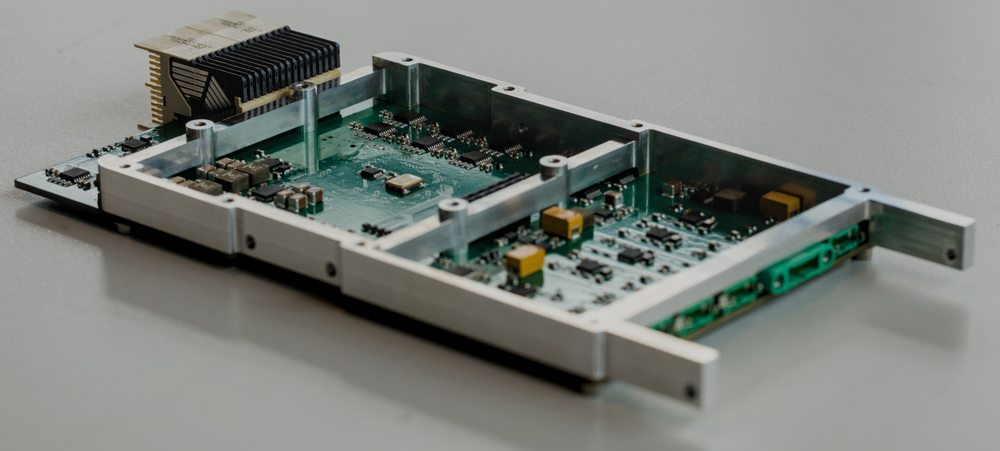
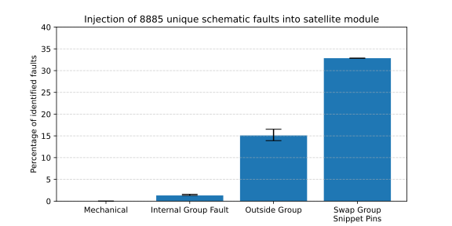

kicad_firmware_generation, TSN and Zephyr on Casio
Christopher Besch • 19th June 2026


- kicad_firmware_
generation
- TSN for Spacecraft
- Zephyr on Casio
generation
Part 1: Automatic Firmware Generation for Spaceflight Hardware based on Schematics
kicad_firmware_generation
- Generate Group Netlist from KiCad schematics
- Generate Code from Group Netlist
- My bachelor thesis:
- implementation
- My PdF:
- Writing paper
- More analysis
- Use case: DLR PCDU satellite module

Synthetic Benchmark
- 120 test cases
- Made with KiCad Open-Hardware projects
- Automatically add synthetic annotations to schematics
- Test runtime of kicad_firmware_generation

Systematic Fault Injection
- Inject faults into PCDU schematics:
swap labels, delete cables - 8885 unique faults
- Over a week on CES server
- Manual sample (300 cases) for fault classification

Part 2:
TSN for Spacecraft
Networking inside Spacecraft
- Real-time: worst-case delay, jitter
- Previously: proprietary point-to-point connections
→ heavy, costly - Can we use Ethernet & IP?
Transport Layer
UDP
- Unreliable service
(e.g., packets might be dropped) - Simple (3 pages in RFC 768)
TCP
- Reliable service using
Automatic Repeat Request (ARQ) - Complex (98 pages in RFC 9293)
Time Sensitive Networking (TSN)
- Standardised under IEEE 802.1Q
- Reliability at link layer: never drop a packet → no need for TCP
- Accurate time-stamps based on PTP (Precision Time Protocol)
- Hard timing guarantees
My Task
- Validate TSN for use in spacecraft
- Build a demonstrator
- TODO: ring topology
Linux TSN Support
- TODO
Zephyr TSN Support
- TODO
Software Requirements
- Open-source networking stack
- Embedded
- Real-time
Options
- Linux with PREEMPT_RT
- Zephyr
Hardware Requirements for TSN
For TSN Endpoints
- IEEE 802.1AS: gPTP (based on IEEE 1588: PTP)
- IEEE 802.1Qav: credit-based traffic shaper
TSN Switching
- In-hardware switch
- IEEE 802.1Qci: Per-Stream Filtering and Policing
- Switchdev driver
Hardware Options
ST
- STM32 MCU: no MMU → no Linux
- STM32MP1: no TSN
- STM32MP2 (like STM32MP257F): closed source drivers for switch (no switchdev implementation)
NXP
- i.MX 8DXL + SJA1105Q: expensive
- NXP Layerscape 1028A: expensive
Intel
- i226-it: PCIe card; not embedded; no switch
Texas Instruments
- SK-AM64B
- TMDS64EVM: expansion connector with RMII for other PHYs
Part 3:
Zephyr on Casio
Casio A199W, launched in 1989
- Few features
Ollee Watch, launched in 2025
- Replaces Casio A199W PCB
- Many features
a small smartwatch with Bluetooth and app - STM32WB55RG
- Closed-source firmware and app
Morse Watch, my Project
- Using Casio case/LCD and Ollee PCB
- Open-source firmware
- Using Zephyr
- Super low-power
battery life target: 1 year
Project Mile Stones
- Casio LCD dev kit
- Reverse-engineered Ollee KiCad schematics
- Zephyr board definition for Ollee
(using kicad_firmware_generation) - Zephyr application: Bluetooth, OTA (MCUboot, MCUmgr)
- Zephyr driver for STM32 direct LCD drive
- Article on Zephyr LCD driver development
- Article on Zephyr's IWDG watchdog driver
- Zephyr PR #108622